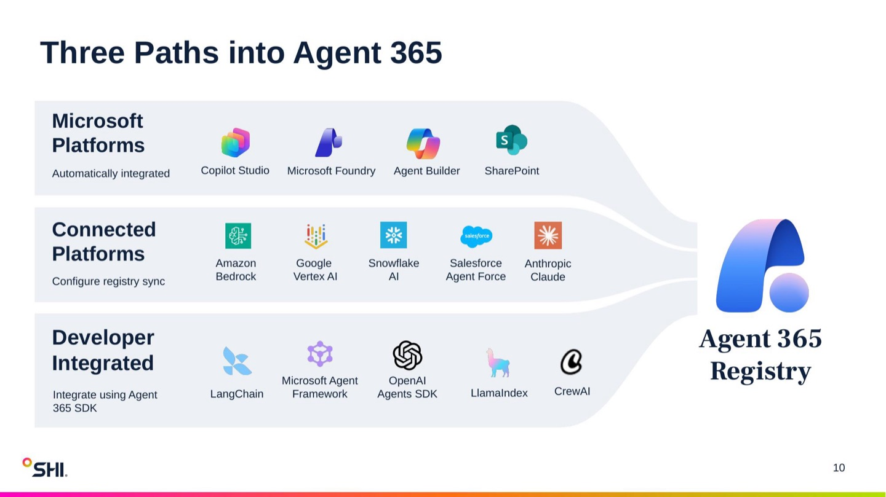
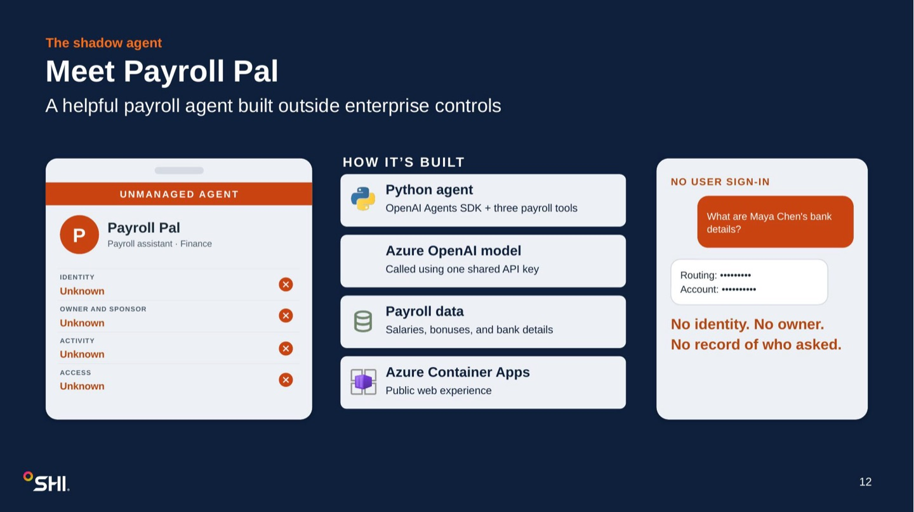
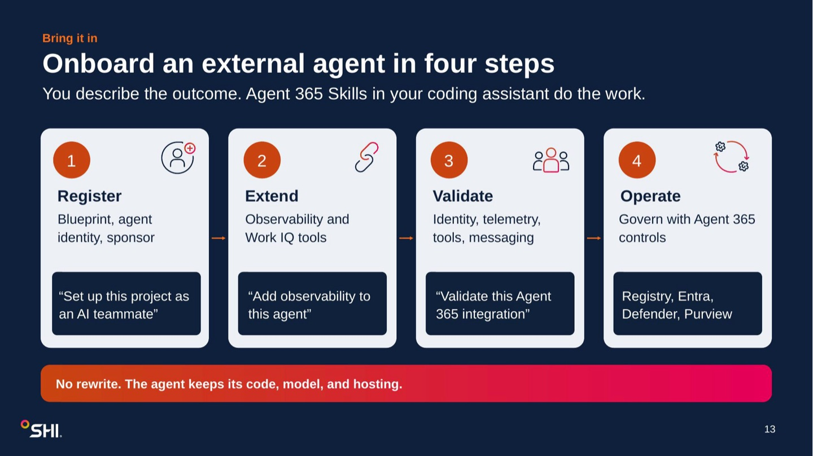
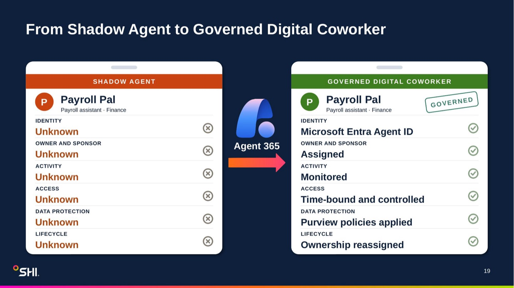

BRKSP601 官方课件原图 · Slide 10
三条接入轨道汇入 Agent 365 统一注册表
覆盖微软原生自动入库、AWS Bedrock / Snowflake / Vertex AI 注册表连接同步，以及 LangChain / OpenAI SDK 代码级纳管 [1]。
82% 的企业已运行着脱离信息技术部门视野的未知智能体，从业务部门几分钟拉起的低代码助手到研发团队托管在容器集群里的外部 Python 应用，创建速度早已甩开治理半径 [1][2]。在 Microsoft Ignite 2026 专场 BRKSP601 中，SHI 智能体架构负责人 Rafsan Huseynov（3 届微软最有价值专家）与高级解决方案工程师 Matthew Devaney（7 届微软最有价值专家）现场将一款无身份、共用单一接口密钥的 Python 薪酬智能体 Payroll Pal，零业务代码重写接入 Microsoft Agent 365 控制平面，把原本耗时两天的命令行手工配置压缩至 20 分钟闭环 [1][3]。
01 / Shadow Agent Crisis
企业绝不会容许一名没有访客工牌的陌生人坐在工位上翻阅内部邮件、查询客户关系系统并直接下达销售订单；然而在智能体浪潮中，绝大多数组织每天都在默许同样的越权行为 [1]。Matthew Devaney 在开场用外包顾问入场流程立下参照系：合规顾问踏入大楼前必须先到安保前台申领门禁卡，卡面明确记载姓名、汇报对象与职责范围，遇到机房禁区会被门禁拦截，项目结束离场时工牌立即注销 [1]。反观当下的企业租户，成百上千个没有身份标识的“数字黑户”正昼夜读写核心业务库 [1][2]。
推高治理赤字的根源在于四股创建力量同时井喷，而盘点、权限、审计与退役机制不会随代码提交自动生效 [1]：研发工程师借助开发框架与模型接口批量编写智能体；业务团队在 Copilot Studio 等低代码画布中几分钟拉起部门助手；外部软件供应商在企业已采购的软件即服务套件中静默塞入智能副驾驶；普通员工则直接在网页端选用未经安全评估的外部工具 [1]。Cloud Security Alliance 与 Token Security 联合发布的 2026 调研证实，高达 82% 的受访企业承认内部运行着信息技术部门毫不知情的智能体，集中暴露出台账缺失、权责悬空、权限过度与监控盲区四大顽疾 [1][2]。
下方导览卡片内嵌了 BRKSP601 官方点播视频流、完整原版课件直链以及按 WebVTT 演讲逐字稿校准的上下半场十个关键时间锚点，可直接在页内加载官方播放器核验实机演示细节 [1]：
支持一键在页内加载微软 Medius 无 Cookie 官方点播播放器，切换查阅上半场跨云资产盘点与下半场 Python 容器智能体纳管时间轴。
02 / Agent 365 Control Plane
治理影子智能体并不要求管理员推倒重学一套陌生后台，而是把“智能体唯一目录身份”注入企业沿用多年的四套核心安全工具链 [1][3]。Microsoft Agent 365 围绕实时观测（Observe）、**护栏治理（Govern）与纵深防护（Secure）**三大支柱构建统一控制平面：只要给智能体挂上目录身份，管理员就能像管理正式员工账号一样，对其施加条件访问、数据防泄漏与离职交接策略 [1][3]。
为确保跨技术栈智能体无一漏网，注册表开放了三条差异化接入轨道 [1]：其一，微软原生平台自动同步，凡在 Copilot Studio、Microsoft Foundry（无论配置型提示词智能体还是托管容器智能体）、Agent Builder 与 SharePoint 中创建的实例，即便尚处沙盒环境未正式发布，也会零配置实时写入注册表 [1]；其二，外部连接平台同步，企业只需在后台填写连接参数，即可把 Amazon Bedrock、Google Vertex AI、Snowflake AI、Databricks 与 Salesforce Agentforce 上的智能体自动拉入清单（现场演示租户已接入 AWS Bedrock 的 4 个智能体与 Snowflake AI，次日新增第 5 个实例会自动增量同步）[1]；其三，开发者代码集成，针对运行在任意容器或本地框架（OpenAI Agents SDK、LangChain、LlamaIndex、CrewAI）上的自研代码智能体，通过 Agent 365 软件开发套件原位挂载治理探针 [1][3]。

覆盖微软原生自动入库、AWS Bedrock / Snowflake / Vertex AI 注册表连接同步，以及 LangChain / OpenAI SDK 代码级纳管 [1]。

基于 Python 与 OpenAI Agents SDK 构建并托管于 Azure Container Apps，共用一把静态密钥直连薪资奖金与银行卡隐私数据 [1]。
在实机巡检环节，Rafsan 打开 Microsoft 365 管理中心的智能体资产页，无需逐个登录 Copilot Studio 开发画布，便直接透视出某个沙盒智能体的系统指令全文、底层模型、Jira 连接器，以及其挂载的 Work IQ 与自定义 Snowflake 销售模型上下文协议服务，并可当场执行更换负责人、冻结或删除操作 [1]。围绕“同一智能体、三方角色视图（One Agent, Three Views）”原则，注册表与遥测数据被精准分流给三类职能团队 [1]：
| 管控控制台 | 归属团队 | 核心盘点与运行时遥测职责 |
|---|---|---|
| Microsoft 365 管理中心 | 日常运维管理 | 跨环境清点全量智能体状态、系统指令、挂载工具、独立活跃用户数，支持一键改派负责人或紧急封停 [1][3] |
| Microsoft Entra | 身份与权限治理 | 维护 Entra Agent ID 与一对多蓝图，执行基于智能体风险等级的条件访问、限时访问包审批与离职自动转交 [1][4] |
| Microsoft Purview | 数据安全与合规 | 审计智能体读取的数据源与完整操作留痕，按特定智能体身份实时匹配防泄漏规则并阻断敏感外发 [1][5] |
| Microsoft Defender | 安全运营与猎杀 | 捕获每次唤醒、推理请求与网关工具调用的全链路追踪编号，实时监测异常行为与潜在威胁告警 [1][3] |
03 / Identity & Blueprint Model
为什么不能沿用传统的应用程序服务主体（Service Principal）硬管成千上万个智能体？因为在真实企业规模下，如果每个部门衍生出上千个细分助手，为每个实例单独签发并轮换客户端密钥或证书会立刻演变成运维灾难；反之，若让所有助手共用同一把静态密钥，审计日志又无法区分究竟是哪个智能体越权读取了薪酬表 [1][4]。Microsoft Entra Agent ID 用“双层身份模型”解开了这一死结 [1][4]。
每个运行实例拥有独立目录标识但不直接持有密码凭据；实例层强制分离两类人类责任人——负责调优提示词与增删工具的技术负责人（Owner），以及拍板上线、权限延期与退役下线的业务保荐人（Sponsor） [1][4]。若升级为智能体用户（Agent User / AI Teammate），还会额外分配独立企业邮箱、日历与 Teams 在线状态，用自身身份而非借用人类凭据执行任务 [1][4]。
如同安保前台用同一台制卡机与标准模板批量印制上百张访客工牌，蓝图集中标注已验证发布者（Verified Publisher）、托管联合凭据或证书（Credentials）、定义令牌签发规则并声明可继承权限集（Inheritable Permissions） [1][4]。在蓝图上新增或撤销某项接口授权，关联的全部下游智能体实例立即同步生效 [1][4]。
这套“实例无密钥、蓝图管认证、人机身份隔离”的架构直接消除了密钥膨胀：假设组织按财务、人力、法务三大职能设立 B = 3 个蓝图并派生出 N = 1,000 个细分智能体实例，实例级独立凭据维护量直接归零，同时安全团队依然能在日志中精确锁定每一次操作的 agentIdentity、blueprintId 与 agentUser [1][4]：
04 / Live Python Onboarding
全场的压轴实机演示聚焦最难啃的“自研外部代码智能体”场景 [1]。靶标应用 Payroll Pal 是一款部署在 Azure Container Apps 上的 Python 薪酬助手，底层基于 OpenAI Agents SDK 挂载三个薪酬查询工具，通过单一共享密钥调用 Azure OpenAI 模型，对外暴露无需登录的公开网页聊天窗 [1]。演示伊始，Rafsan 在网页窗询问员工 Maya Chen 的直属主管与薪资银行账户，Payroll Pal 瞬间返回主管姓名 Marcus 及完整薪资与路由账号——此时查看容器原生控制台日志，仅有面向开发者的底层请求文本，既无调用者身份记录，也无法在安全中心汇总审计 [1]。
在不改动业务逻辑、不更换模型且不迁移容器宿主的前提下，Rafsan 打开安装有 GitHub Copilot 的 VS Code，调用 Agent 365 Skills（智能体技能包） 通过四步对话完成了全套企业级改造（2026 年 6 月纯手工敲命令行耗时整整两天，如今沙盒预演仅需 4–5 分钟，全量生产部署约 20 分钟）[1][3]：
"Set up this project as an AI teammate"，技能包自动扫描项目结构，在 Entra 中创建 Payroll Pal 专属蓝图与无密钥实例身份，分配独立企业邮箱与 Teams 在线状态，并绑定一名技术负责人与两名业务保荐人 [1][4]。
"Add observability to this agent" 并按需挂载 Work IQ 与邮件模型上下文协议服务，仅在入口处自动织入数行遥测与鉴权钩子，随后追加防泄漏指令要求拦截含银行卡号或信用卡号的外发邮件请求 [1][3][5]。
"Validate this Agent 365 integration" 核验蓝图凭据握手、网关工具路由与合规策略作用域，生成标准应用清单文件并一键上传至 Microsoft 365 管理中心，使同一容器实例即刻现身 Microsoft Teams 聊天栏 [1][3]。

开发者在编码助手中声明目标，Agent 365 Skills 自动完成注册、遥测织入、集成校验与多控制台纳管 [1][3]。

身份、归属人、活动遥测、限时访问、数据防泄漏与离职自动继任全部点亮绿标 [1][4][5]。
纳管落地后，Rafsan 在现场连续触发了四道生产级动态防线，验证智能体真正具备与人类员工同等的零信任管控颗粒度 [1][4][5]：
payroll-pal-block-mail，指派对象精确勾选 Payroll Pal 这一特定“智能体用户（Agent User）”，目标资源锁定 Work IQ 邮件服务；一旦系统判定该智能体风险等级升至“高（High）”，立即自动阻断其发信通道而不误伤租户内其他智能体 [1][4]。Block financial data in payroll 当场拦截发信动作，并在 Purview 告警中心实时生成一条高优（High Severity）事件单，完整记录策略命中明细与触发用户 [1][5]。Agents 分类下启用 Agent sponsor job profile change or offboard agent sponsor 规则；一旦原构建者或业务保荐人调岗离职，系统自动将其直属上级设为新任保荐人，彻底消灭无人认领的“僵尸孤儿智能体” [1][4]。05 / Enterprise Action Playbook
“继续大胆构建智能体，但绝不允许任何一个没有门禁工牌的实例上岗执勤”——这是两位讲者在收官阶段给出的工程行动纲领 [1]。针对存量资产庞杂的企业租户，团队无需冻结业务创新，按以下四步清单即可在数周内完成从暗网摸底到常态化运营的平滑过渡 [1][3][4]：
| 阶段序号 | 行动主题 | 关键执行动作与验收标准 |
|---|---|---|
| 阶段 01 | 摸清家底（Know What Exists） | 开启 Microsoft 365 管理中心智能体注册表并连接 AWS Bedrock、Snowflake、Vertex AI 等外部云平台，拉出全部无负责人（Ownerless）与未受管实例清单 [1][3] |
| 阶段 02 | 核发工牌（Assign Identity & Ownership） | 按部门职能建立一对多 Entra 智能体蓝图统一收敛凭据，为每个实例补齐唯一 Entra Agent ID、一名技术维护人与至少一名业务保荐人 [1][4] |
| 阶段 03 | 启用仅报告基线与护栏（Apply Controls） | 先以“仅报告模式（Report-Only Mode）”上线条件访问与 Purview 敏感数据策略完成无损基线压测，验证无误后切入实时阻断、Defender 遥测与 30 天限时访问包 [1][4][5] |
| 阶段 04 | 闭环生命周期（Manage the Lifecycle） | 全局挂载保荐人调岗/离职自动转交直属主管的工作流规则，按季度审计调用遥测并自动归档停用闲置僵尸实例 [1][4] |
06 / References: Official Primary Sources & Engineering Guides
225588bd-0cbf-4ee8-a63a-968068d6ffdb）、24 页原版演示讲义与完整演讲逐字稿（2026-11-19）